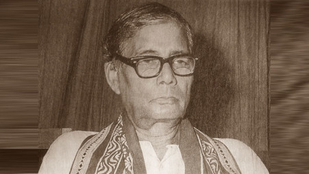

Jasimuddin was married to Begum Mamtaz Jasimuddin (d. 2006). Together
they had three sons, Kamal Anwar Hashu, Firoz Anwar and Khurshid
Anwar, and two daughters, Begum Hasna Moudud and Asma Elahi. Hasna is
the wife of politician Moudud Ahmed. Asma is married to Tawfiq-e-Elahi
Chowdhury.